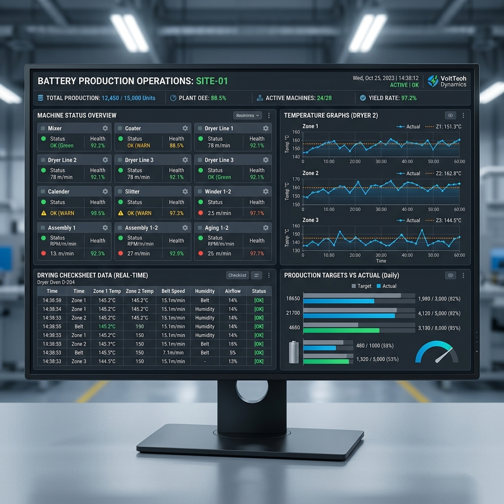
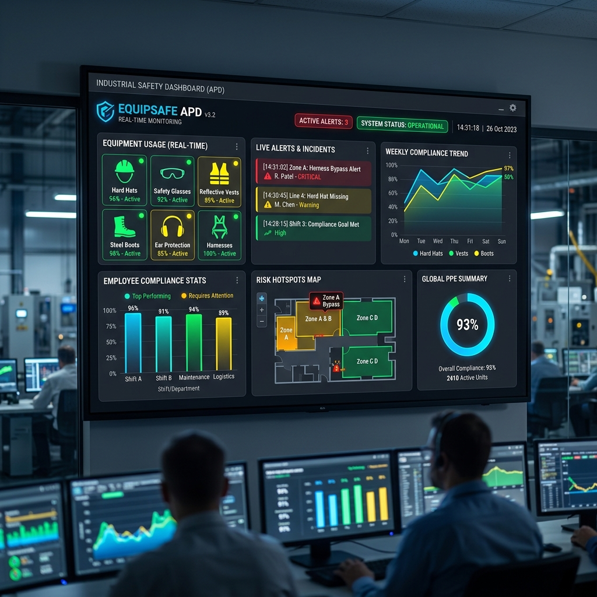

Internship Projects
Koleksi sistem informasi dan dashboard monitoring yang saya kembangkan selama masa magang di PT Century Batteries Indonesia (Astra Otoparts Group).

Formation IGO Drying
Sistem monitoring checksheet proses pengeringan pada mesin IGO secara real-time.

APD Monitoring
Dashboard visualisasi penggunaan Alat Pelindung Diri di area produksi.

Skill Matrix MP
Aplikasi pemantauan kompetensi Man Power untuk penempatan staf yang optimal.
Henkaten Board
Sistem pencatatan perubahan 4M pada line produksi secara digital.
Interval Pasting
Monitoring interval waktu pada proses pasting untuk menjaga efisiensi produksi.
Checksheet Formation
Digitalisasi formulir checksheet harian pada proses formation baterai.
Monitoring Formation
Dashboard pemantauan status charging dan kesehatan baterai selama proses formation.
Shop Floor Management
Portal terintegrasi untuk manajemen data operasional di lantai produksi.
Dashboard Analisis WO
Sistem analisis Work Order untuk memantau pencapaian target produksi harian.